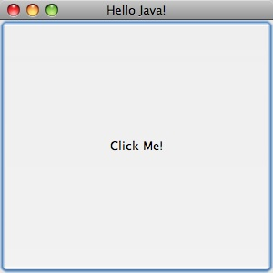
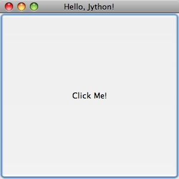
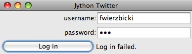
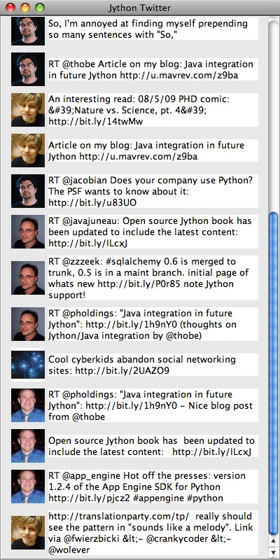

The C implementation of Python comes with Tkinter for writing Graphical User Interfaces (GUIs). The GUI toolkit that you get automatically with Jython is Swing, which is included with the Java Platform by default. Similar to CPython, there are other toolkits available for writing GUIs in Jython. Because Swing is available on any modern Java installation, we will focus on the use of Swing GUIs in this chapter.
Swing is a large subject, and can’t be fully covered in a single chapter. In fact, there are entire books devoted to Swing. We will provide an introduction to Swing, but only enough to describe the use of Swing from Jython. For in-depth coverage of Swing, one of the many books or web tutorials, like the Swing tutorial at java.sun.com/docs/books/tutorial/uiswing provided by Sun Microsystems, should be used.
Using Swing from Jython has a number of advantages over the use of Swing in Java. For example, bean properties are less verbose in Jython, and binding actions in Jython is much less verbose (in Java you have to use anonymous classes, and in Jython you can pass a function).
Let’s start with a simple Swing application in Java, and then we will look at the same application in Jython. See Listing 16-1.
Listing 16-1.
import java.awt.event.ActionEvent;
import java.awt.event.ActionListener;
import javax.swing.JButton;
import javax.swing.JFrame;
public class HelloWorld {
public static void main(String[] args) {
JFrame frame = new JFrame("Hello Java!");
frame.setDefaultCloseOperation(JFrame.EXIT_ON_CLOSE);
frame.setSize(300, 300);
JButton button = new JButton("Click Me!");
button.addActionListener(
new ActionListener() {
public void actionPerformed(ActionEvent event) {
System.out.println("Clicked!");
}
}
);
frame.add(button);
frame.setVisible(true);
}
}
This simple application draws a JFrame that is completely filled with a JButton. When the button is pressed, “Click Me!” prints to the command line. See Figure 16-1.

**Figure 16-1. **“Click Me” printed to the command line
Now let’s see what this program looks like in Jython (see Listing 16-2).
Listing 16-2.
from javax.swing import JButton, JFrame
frame = JFrame('Hello, Jython!',
defaultCloseOperation = JFrame.EXIT_ON_CLOSE,
size = (300, 300)
)
def change_text(event):
print 'Clicked!'
button = JButton('Click Me!', actionPerformed=change_text)
frame.add(button)
frame.visible = True
Except for the title, the application produces the same JFrame with JButton, printing “Click Me!” to the screen when the button is clicked. See Figure 16-2.

**Figure 16-2. **Results of the application created in Listing 16-2
Let’s go through the Java and the Jython examples line by line to get a feel for the differences between writing Swing apps in Jython and Java. First the import statements:
Listing 16-3. In Java
import java.awt.event.ActionEvent;
import java.awt.event.ActionListener;
import javax.swing.JButton;
import javax.swing.JFrame;
Listing 16-4. In Jython
from javax.swing import JButton, JFrame
In Jython, it is always best to make imports explicit by using names, instead of
from . Note that we did not need to import ActionEvent or ActionListener, since Jython’s dynamic typing allowed us to avoid mentioning these classes in our code.
Next, we have some code that creates a JFrame, and then sets a couple of bean properties.
Listing 16-5. In Java
JFrame frame = new JFrame("Hello Java!");
frame.setDefaultCloseOperation(JFrame.EXIT_ON_CLOSE);
frame.setSize(300, 300);
Listing 16-6. In Jython
frame = JFrame('Hello, Jython!',
defaultCloseOperation = JFrame.EXIT_ON_CLOSE,
size = (300, 300)
)
In Java a new JFrame is created, and then the bean properties defaultCloseOperation and size are set. In Jython, we are able to add the bean property setters right inside the call to the constructor. This shortcut is covered in detail in Chapter 6. Still, it will bear some repeating here, because bean properties are so important in Swing libraries. In short, if you have bean getters and setters of the form getFoo/setFoo, you can treat them as properties of the object with the name “foo.” So instead of x.getFoo() you can use x.foo. Instead of x.setFoo(bar) you can use x.foo = bar. If you take a look at any Swing app above a reasonable size, you are likely to see large blocks of setters like:
Listing 16-7.
JTextArea t = JTextArea();
t.setText(message)
t.setEditable(false)
t.setWrapStyleWord(true)
t.setLineWrap(true)
t.setAlignmentX(Component.LEFT_ALIGNMENT)
t.setSize(300, 1)
which, in our opinion, look better in the idiomatic Jython property setting style because they are so easy to read:
Listing 16-8.
t = JTextArea()
t.text = message
t.editable = False
t.wrapStyleWord = True
t.lineWrap = True
t.alignmentX = Component.LEFT_ALIGNMENT
t.size = (300, 1)
You can also roll the setters into the constructor:
t = JTextArea(text = message,
editable = False,
wrapStyleWord = True,
lineWrap = True,
alignmentX = Component.LEFT_ALIGNMENT,
size = (300, 1)
)
When you use properties rolled into the constructor,you need to watch out for the order in which the setters will be called. Generally this is not a problem, as the bean properties are not usually order dependent. The big exception is setVisible(): you probably have to set the visible property outside of the constructor after all properties have been set to avoid any strangeness while the properties are being set. Going back to our short example, the next block of code creates a JButton and binds the button to an action that prints out “Click Me!”
Listing 16-9. In Java
JButton button = new JButton("Click Me!");
button.addActionListener(
new ActionListener() {
public void actionPerformed(ActionEvent event) {
System.out.println("Clicked!");
}
}
);
frame.add(button);
Listing 16-10. In Jython
def change_text(event):
print 'Clicked!'
button = JButton('Click Me!', actionPerformed=change_text)
frame.add(button)
We think Jython’s method is particularly nice here when compared to Java. Here we can pass a first class function “change_text” directly to the JButton in its constructor. This plays better than the more cumbersome Java “addActionListener,” method where we need to create an anonymous ActionListener class and define its actionPerformed method with all the ceremony necessary for static type declarations. This is one case where Jython’s readability really stands out. This works because Jython is able to automatically recognize events in Java code if they have corresponding addEvent()* and *removeEvent() methods. Jython takes the name of the event and makes it accessible using the nice Python syntax as long as the event methods are public. Finally, in both examples we set the visible property to True. Again, although we could have set this property in the frame constructor, the visible property is one of those rare order-dependent properties that we want to set at the right time (and in this case, last).
Listing 16-11. In Java
frame.setVisible(true);
Listing 16-12. In Jython
frame.visible = True
Now that we have looked at a simple example, it makes sense to see what a medium sized app might look like in Jython. Because Twitter apps have become the “Hello World” of GUI applications these days, we will go with the trend. The following application gives the user a login prompt. When the user successfully logs in, the most recent tweets in their timeline are displayed. See Listing 16-13.
Listing 16-13. Jython Twitter Client
import twitter
import re
from javax.swing import (BoxLayout, ImageIcon, JButton, JFrame, JPanel,
JPasswordField, JLabel, JTextArea, JTextField, JScrollPane,
SwingConstants, WindowConstants)
from java.awt import Component, GridLayout
from java.net import URL
from java.lang import Runnable
class JyTwitter(object):
def __init__(self):
self.frame = JFrame("Jython Twitter",
defaultCloseOperation = WindowConstants.EXIT_ON_CLOSE)
self.loginPanel = JPanel(GridLayout(0,2))
self.frame.add(self.loginPanel)
self.usernameField = JTextField('',15)
self.loginPanel.add(JLabel("username:", SwingConstants.RIGHT))
self.loginPanel.add(self.usernameField)
self.passwordField = JPasswordField('', 15)
self.loginPanel.add(JLabel("password:", SwingConstants.RIGHT))
self.loginPanel.add(self.passwordField)
self.loginButton = JButton('Log in',actionPerformed=self.login)
self.loginPanel.add(self.loginButton)
self.message = JLabel("Please Log in")
self.loginPanel.add(self.message)
self.frame.pack()
self.show()
def login(self,event):
self.message.text = "Attempting to Log in..."
username = self.usernameField.text
try:
self.api = twitter.Api(username, self.passwordField.text)
self.timeline(username)
self.loginPanel.visible = False
self.message.text = "Logged in"
except:
self.message.text = "Log in failed."
raise
self.frame.size = 400,800
def timeline(self, username):
timeline = self.api.GetFriendsTimeline(username)
self.resultPanel = JPanel()
self.resultPanel.layout = BoxLayout(self.resultPanel, BoxLayout.Y_AXIS)
for s in timeline:
self.showTweet(s)
scrollpane = JScrollPane(JScrollPane.VERTICAL_SCROLLBAR_AS_NEEDED,
JScrollPane.HORIZONTAL_SCROLLBAR_NEVER)
scrollpane.preferredSize = 400, 800
scrollpane.viewport.view = self.resultPanel
self.frame.add(scrollpane)
def showTweet(self, status):
user = status.user
p = JPanel()
p.add(JLabel(ImageIcon(URL(user.profile_image_url))))
p.add(JTextArea(text = status.text,
editable = False,
wrapStyleWord = True,
lineWrap = True,
alignmentX = Component.LEFT_ALIGNMENT,
size = (300, 1)
))
self.resultPanel.add(p)
def show(self):
self.frame.visible = True
if __name__ == '__main__':
JyTwitter()
This code depends on the python-twitter package. This package can be found on the Python package index (PyPi). If you have easy_install (see Appendix A for instructions on easy_install) then you can install python-twitter like this:
Listing 16-14.
jython easy_install python-twitter
This will automatically install python-twitter’s dependency: simplejson. Now you should be able to run the application. You should see the login prompt shown in Figure 16-3.
|picture_5|**Figure 16-3. **Password prompt
If you put in the wrong password, you should get the message shown in Figure 16-4.

And finally, once you have successfully logged in, you should see something that looks similar to Figure 16-5.

**Figure 16-5. **Login successful!
|picture_4|The constructor creates the outer frame, imaginatively called self.frame. We set defaultCloseOperation so that the app will terminate if the user closes the main window. We then create a loginPanel that holds the text fields for the user to enter username and password, and create a login button that will call the self.login method when clicked. We then add a “Please log in” label and make the frame visible.
Listing 16-15.
def __init__(self):
self.frame = JFrame("Jython Twitter",
defaultCloseOperation = WindowConstants.EXIT_ON_CLOSE)
self.loginPanel = JPanel(GridLayout(0,2))
self.frame.add(self.loginPanel)
self.usernameField = JTextField('',15)
self.loginPanel.add(JLabel("username:", SwingConstants.RIGHT))
self.loginPanel.add(self.usernameField)
self.passwordField = JPasswordField('', 15)
self.loginPanel.add(JLabel("password:", SwingConstants.RIGHT))
self.loginPanel.add(self.passwordField)
self.loginButton = JButton('Log in',actionPerformed=self.login)
self.loginPanel.add(self.loginButton)
self.message = JLabel("Please Log in")
self.loginPanel.add(self.message)
self.frame.pack()
self.show()
The login method changes the label text and calls into python-twitter to attempt a login. It’s in a try/except block that will display “Log in failed” if something goes wrong. A real application would check different types of exceptions to see what went wrong and change the display message accordingly.
Listing 16-16.
def login(self,event):
self.message.text = "Attempting to Log in..."
username = self.usernameField.text
try:
self.api = twitter.Api(username, self.passwordField.text)
self.timeline(username)
self.loginPanel.visible = False
self.message.text = "Logged in"
except:
self.message.text = "Log in failed."
raise
self.frame.size = 400,800
If the login succeeds, we call the timeline method, which populates the frame with the latest tweets that the user is following. In the timeline method, we call GetFriendsTimeline from the python-twitter API; then we iterate through the status objects and call showTweet on each. All of this gets dropped into a JScrollPane and set to a reasonable size, and then it is added to the main frame.
Listing 16-17.
def timeline(self, username):
timeline = self.api.GetFriendsTimeline(username)
self.resultPanel = JPanel()
self.resultPanel.layout = BoxLayout(self.resultPanel, BoxLayout.Y_AXIS)
for s in timeline:
self.showTweet(s)
scrollpane = JScrollPane(JScrollPane.VERTICAL_SCROLLBAR_AS_NEEDED,
JScrollPane.HORIZONTAL_SCROLLBAR_NEVER)
scrollpane.preferredSize = 400, 800
scrollpane.viewport.view = self.resultPanel
self.frame.add(scrollpane)
In the showTweet method, we go through the tweets and add a JLabel with the user’s icon (fetched via URL from user.profile_image_url) and a JTextArea to contain the text of the tweet. Note all of the bean properties that we had to set to get the JTextArea to display correctly.
Listing 16-18.
def showTweet(self, status):
user = status.user
p = JPanel()
p.add(JLabel(ImageIcon(URL(user.profile_image_url))))
p.add(JTextArea(text = status.text,
editable = False,
wrapStyleWord = True,
lineWrap = True,
alignmentX = Component.LEFT_ALIGNMENT,
size = (300, 1)
))
self.resultPanel.add(p)
And that concludes our quick tour of Swing GUIs built via Jython. Again, Swing is a very large subject, so you’ll want to look into dedicated Swing resources to really get a handle on it. After this chapter, it should be reasonably straightforward to translate the Java Swing examples you find into Jython Swing examples.